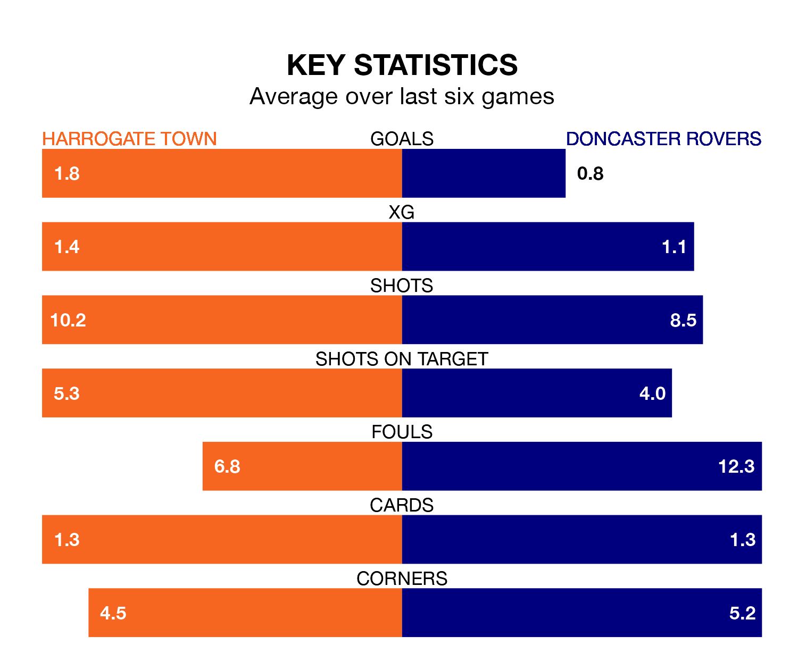

Harrogate Town host Doncaster Rovers on Saturday at the EnviroVent Stadium in EFL League Two.
In their last league match, on Monday, Harrogate drew with Morecambe 2-2 away, with goals from George Thomson and Jack Muldoon.
Doncaster won, 3-0 at home against Milton Keynes Dons, with Joe Ironside, Luke Molyneux and Tommy Rowe on the scoresheet.
Doncaster are 19th in the table after 25 games, of which they have won eight and drawn four, earning 28 points.
Harrogate are five places ahead of Rovers in 14th, with 10 wins and four draws putting them on 34 points.
Town are in reasonable form in EFL League Two, with three wins and two draws from their last six games.
With a win and two draws over that period, the Rovers' form is much worse – they have taken five points from 18, compared to the home team's 11.
With 29 goals in 25 games so far this season, Harrogate are scoring at below the league average rate with 1.2 goals per game. But they are conceding fewer than average too, letting in 34 goals at a rate of 1.4 per game.
The visitors are also below average scorers, with 1.2 goals per game, compared to a league average of 1.5. They have conceded 1.7 goals per game.
Updated: 10:36, 03/01/24